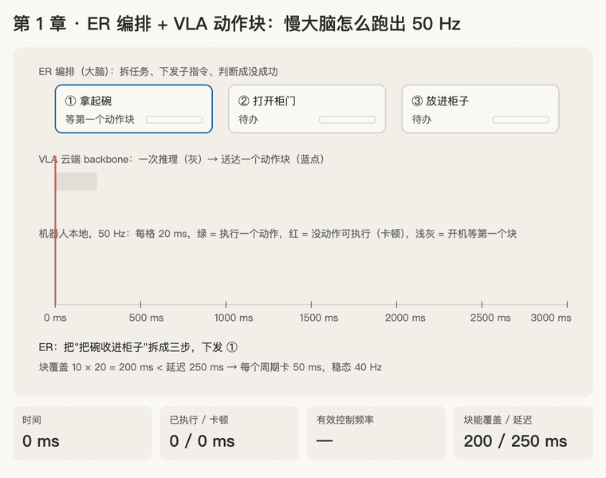

读懂 Gemini Robotics · 讲义目录
英文名 Reading Gemini Robotics。
在线阅读：https://wikieden.github.io/reading-gemini-robotics/
14 章大纲 · 已写 1 章 · 1 个动画（GIF + 可交互页面）· 6 张复习卡片 · 覆盖 Gemini Robotics 1.0（2025-03）到 2.5（2026-11）的八次发布，讲到哪章写哪章，每章照 讲义书范本 补动画、代码对照和复习卡片（GM01 起）
这本书讲什么
Google DeepMind 用 18 个月把 Gemini 接到了机器人身上：一个具身推理模型（ER）当大脑，一个 VLA 当手，后来又加了本地小模型、人形全身控制、多机协作，最后连通用前沿模型 Gemini 4 Argon 也进场当研发引擎。这本书从全景和 Google 机器人十年的前史讲起，逐个拆开 ER 的具身推理、VLA 的"云端大脑 + 本地小脑"、先想再动、一个模型控制多种身体、ER 当编排者，再讲评测和安全，最后看前沿模型进场以后专用机器人模型的位置。
- 适合谁：知道 VLM、VLA 是什么，读过本仓库 VLA 讲义前几章更好；缺的背景在用到的那一章现场补。
- 读完能做什么：说清 Gemini Robotics 每一代改了什么、为什么这样设计；用 ER API 搭一个"编排 + 工具"的机器人 agent；拿到一篇机器人基础模型的报告，能按"能力、本体、安全"三条线读，知道官方数字该怎么追问。做 学习计划 的里程碑 GM-M0–GM-M7。
- 怎么读：按章顺序读。每章先看讲解和动画，再自己做练习，最后用复习卡片隔几天考自己。
讲解的特点
- 一次一小步：每个概念按"白话类比 → 公式（每个符号说清楚怎么读）→ 小数字亲手算一遍"讲。
- 每章一个动画：关键机制做成可交互页面（▶ 播放、→ 单步、↺ 重来，有参数的配滑块），讲义里嵌 GIF。
- 对照原文：讲到原文的地方标本地文本行号（如 1.0 报告 L830–L837），引用原句。
- 分清"官方写了"和"我们推测"：GR 2 以后没有技术报告，凡是推测都写明。
- 保留真实的学习过程：练习与作答记录里是学习时的原话、对错和点评。
- 术语不设门槛：缩写第一次出现就给英文全称并逐词解释，全书缩写见 缩写与术语表。
- 每章都有代码对照：讲义里的数字用 Python 算一遍，配测试核对；只算讲过的例子，不提前给练习答案。
- 每章收尾有口诀：全部口诀汇总在本页末尾。
示例动画
| 动画 | 章 | 演什么 |
|---|---|---|
 |
第 1 章 全景 · ▶ 交互 | ER 拆任务、判成败；云端 VLA 每 250 ms 送一块动作，块不够长机器人就卡顿 |
其他入口
- 学习计划：阶段 A–J、逐章材料、里程碑
- 复习卡片（GM01 起）
- 缩写与术语表
- 代码对照：每章的数字用 Python 算一遍
- 材料清单：八次发布的时间线、论文、官方网页和报告
- 官方示例代码：
materials/robotics-samples/（ER API 入门 notebook、Live API agent、Spot 示例）
全流程总览
用户："把碗收进柜子"
│
▼
┌───────────────────────────── ER（大脑，VLM）───────────────────────────────┐
│ 看图 / 看视频（第 3 章）→ 拆成子指令（第 8 章）→ 路由：交给 VLA / 问人 / 急停（第 13 章）│
│ 成功检测、进度估计、moment finding（第 8 章） 调用搜索等数字工具（第 8 章） │
└───────────────┬──────────────────────────────────────────────▲─────────────┘
│ 一句自然语言子指令（第 1 章） │ 视频反馈
▼ │
┌──────────────────────────── VLA（手）────────────────────────┴──────────────┐
│ 先想再动：下一步 + 动作描述（第 6 章） │
│ 云端 backbone → 动作块 → 本地 decoder，50 Hz（第 1、4 章） │
│ 一个模型多种身体：Motion Transfer（第 7 章）；全身、灵巧手、多机（第 10 章） │
│ 本地小模型 On-Device（第 9 章） │
└─────────────────────────────────────────────────────────────────────────────┘
研发与评测：专精适配（第 5 章）· Veo 世界模拟器评测（第 11 章）· ASIMOV 语义安全（第 12 章）
· Gemini 4 Argon 当研究引擎（第 14 章）；前史见第 2 章
| 步 | 做什么 | 为什么 |
|---|---|---|
| 看懂场景 | ER 指点、检测、读仪表 | 先知道东西在哪、是什么状态，才谈得上计划 |
| 拆任务 | ER 把长任务拆成一句句子指令 | VLA 擅长几秒到几十秒的短技能，长程交给 ER |
| 出动作 | VLA 先想（可选）再出动作块 | 一块多步补上大模型的延迟，思考帮助多步任务 |
| 判成败 | ER 看视频做成功检测和进度估计 | 决定下一步、重试还是求助 |
| 守安全 | ER 在每次路由时检查约束，必要时急停 | 语言模型的语义安全 + 传统的物理安全，两层都要 |
目录
| 章 | 主题 | 一句话精要 | 动画 | 卡片 | 状态 |
|---|---|---|---|---|---|
| 1 | 全景：两个模型、八次发布 | ER 拆活判成败、VLA 当工具；延迟 × 频率 = 动作块下限；按能力、本体、安全三条线读发布；官方数字问三个问题 | 双模型与动作块 | GM01–GM06 | ✅ 讲解（练习待作答） |
| 2 | 前史：Google 机器人十年 | SayCan → RT-1 → PaLM-E → RT-2 → RT-X → AutoRT → RT-H | — | — | ⬜ |
| 3 | 具身推理（ER） | ERQA、指点、3D 检测、抓取与轨迹；agentic vision 读仪表 | — | — | ⬜ |
| 4 | GR 1.0 VLA：云端大脑 + 本地小脑 | backbone 蒸馏、160 / 250 ms、50 Hz；ALOHA 2 车队数据 | — | — | ⬜ |
| 5 | 专精与适配 | 长程灵巧、少样本新任务、新本体 | — | — | ⬜ |
| 6 | 先想再动：Thinking VLA | 思考写什么、为什么帮多步任务 | — | — | ⬜ |
| 7 | Motion Transfer | 一个模型控制 ALOHA、Franka、Apollo；零样本跨本体 | — | — | ⬜ |
| 8 | ER 当 orchestrator | VLA 作为工具；成功检测、进度、moment finding；Live API | — | — | ⬜ |
| 9 | On-Device | Gemma 底座、本地推理、几小时适配新本体；CLIFT | — | — | ⬜ |
| 10 | GR 2：全身、灵巧手、多机协作 | 公开数字和推测分开写 | — | — | ⬜ |
| 11 | 怎么评测通用机器人策略 | 真机 A/B 统计；Veo 世界模拟器评测 | — | — | ⬜ |
| 12 | 语义安全：ASIMOV 与机器人宪法 | 从伤害报告生成 benchmark；自动修订宪法 | — | — | ⬜ |
| 13 | Agentic 安全 | 拒绝、求助、急停；推理时引导；越狱 | — | — | ⬜ |
| 14 | 前沿模型进场与总复盘 | Argon 的四个用法；GR 2.5；专用模型的位置 | — | — | ⬜ |

各章要回答的问题见 学习计划 · 讲义章节大纲。
口诀汇总
- 第 1 章：工长拆活熟练工干，中间只传一句话；大脑慢就一块多给，延迟乘频率是下限；能力本体加安全，八次发布三条线；跟谁比、绝对相对、测几次，近百就换失败率。